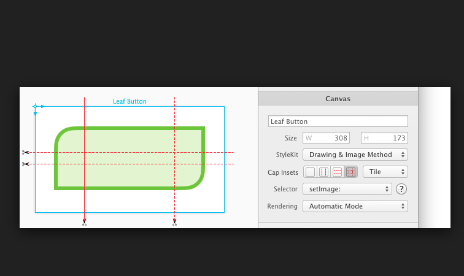

网络下载的聊天程序界面 DEMO 的源代码整理，日后用到时作为参考。
源文件地址 ，项目文件名称是 SPHChatCollectionView-master。自己照着这个项目另外写了一遍，变量名称也跟着改了一些。
源码逻辑分析 1.在 AppDelegate 中初始化视图控制器并分配到根视图控制器。
2.视图控制器在 viewDidLoad 中调用 SetupDummyMessages 加载数据。并注册了 CELL 的 xib 文件。视图控制器使用 collectionView:layout:sizeForItemAtIndexPath: 调整文字内容的 CELL 尺寸。
3.在视图控制器的委托 collectionView:cellForItemAtIndexPath: 读取数据，实例化 CCBCollectionViewCell，调用 CCBCollectionViewCell 的 setFeedData 生成聊天界面。
4.在 setFeedData 中，根据数据类型判断生成图片气泡还是文字气泡。
5.生成文字气泡，使用 CCBTextBubbleView 类。生成图片气泡，使用 CCBImageBubbleView 类。
AppDelegate application:didFinishLaunchingWithOptions: 从这个函数中分配当前视图控制器和根视图控制器，并使窗口可见，所以调试第一步从这里开始
1 2 3 4 5 6 7 8 9 10 11 12 13 14 15 16 17 18 19 20 21 22 23 24 25 26 27 28 29 30 31 32 33 34 35 36 37 38 39 40 41 42 43 44 45 46 47 48 49 50 51 52 53 54 55 56 57 58 59 60 61 62 63 64 65 66 67 68 69 70 71 72 73 74 75 76 77 78 79 80 81 82 83 84 85 86 87 88 89 90 91 92 93 94 95 96 97 98 99 100 101 102 103 104 105 106 107 108 109 110 111 112 113 114 115 116 117 118 119 120 121 122 123 124 125 126 127 128 129 130 131 132 133 134 135 136 137 138 139 140 141 142 143 144 145 146 147 148 149 150 151 152 153 154 155 156 157 158 159 160 161 162 163 164 165 166 167 168 169 170 171 172 173 174 175 176 177 178 179 180 181 182 183 184 185 186 187 188 189 190 191 192 193 194 195 196 197 198 199 200 201 202 203 204 205 206 207 208 209 210 211 212 213 214 215 216 217 218 219 220 221 222 223 224 - (BOOL )application:(UIApplication *)application didFinishLaunchingWithOptions:(NSDictionary *)launchOptions { self .window = [[UIWindow alloc] initWithFrame:[[UIScreen mainScreen] bounds]]; self .viewController = [[CCBViewController alloc] initWithNibName:@"CCBViewController" bundle:nil ]; self .window .rootViewController = self .viewController ; [self .window makeKeyAndVisible]; return YES ; } ```objc #CCBViewController 这个程序只有一个视图控制器，绑定了从 UIViewController 继承的 CCBViewController 类，实现了 UICollectionViewDelegate 和 UICollectionViewDataSource 协议。界面从 xib 文件加载，在 xib 文件中，作为视图控制器的控件是 View，使用 CollectionView 作为存放对话行的内容，对话行使用 CCBCollectionViewCell 类来自定义外观，行在视图控制器的 collectionView:cellForItemAtIndexPath 加载并设置外观。 ##viewDidLoad ```objc - (void )viewDidLoad { [super viewDidLoad]; [self .sphChatTable registerNib:[UINib nibWithNibName:@"Cell" bundle:nil ] forCellWithReuseIdentifier:CellIdentifier]; [self SetupDummyMessages]; .... .... } ```objc ##collectionView:cellForItemAtIndexPath: 最常用的函数，按顺序生成每一行 CELL。 ```objc - (UICollectionViewCell *)collectionView:(UICollectionView *)collectionView cellForItemAtIndexPath:(NSIndexPath *)indexPath { CCBCollectionViewCell *cell = [collectionView dequeueReusableCellWithReuseIdentifier:CellIdentifier forIndexPath:indexPath]; cell.layer .shouldRasterize = YES ; cell.layer .rasterizationScale = [UIScreen mainScreen].scale ; 资料地址：http://jeffreysambells.com/2013/03/01/asynchronous-operations-in-ios-with-grand-central-dispatch C 语言的 API，GCD。 代码块内的代码将会发送给第一个参数中指定的线程执行 GCD 队列可以并发执行或者排队执行(当它们是一个队列，并且一个执行完成之后后面的接着执行) 完整笔记地址：http://humyang.github.io/2015/GCDIntro/ */ dispatch_async (dispatch_get_main_queue(), ^ { for (UIView *v in [cell.contentView subviews]) [v removeFromSuperview]; if ([self .sphChatTable .indexPathsForVisibleItems containsObject:indexPath]) { [cell setFeedData:(CCB_PARAM_List*)[sphBubbledata objectAtIndex:indexPath.row ]]; } }); return cell; } ```objc ##setFeedData: 这个函数内是主要的设置对话界面的样式，通过 sphBubbledata.chat_media_type 判断如何渲染对话界面 ```objc if ([feed_data.chat_media_type isEqualToString:kSTextByme]) { .... } else if ([feed_data.chat_media_type isEqualToString:kSTextByOther]){ .... } else if ([feed_data.chat_media_type isEqualToString:kSImagebyme]){ .... } else { } ```objc 下面是其中一个条件的执行语句 ```objc if ([feed_data.chat_media_type isEqualToString:kSTextByme]) { CCBTextBubbleView *textMessageBubble=[[CCBTextBubbleView alloc] initWithText:feed_data.chat_message withColor:GREEN_TEXT_BUBBLE_COLOR withHighlightColor:[UIColor whiteColor] withTailDirection:MessageBubbleViewButtonTailDirectionRight maxWidth:MAX_BUBBLE_WIDTH]; -sizeToFit should not be called if you are using auto-layout. That's part of the 'old' system. 调整聊天文本气泡内文字的位置，类重写了这个方法，自定义了一些修改。 */ [textMessageBubble sizeToFit]; textMessageBubble.frame = CGRectMake (265 -textMessageBubble.frame .size .width , 0 , textMessageBubble.frame .size .width , textMessageBubble.frame .size .height +20 ); [self .contentView addSubview:textMessageBubble]; UILabel *timeLabel = [[UILabel alloc] initWithFrame:CGRectMake (0 , self .frame .size .height -30 , 55 , 20 )]; timeLabel.text = feed_data.chat_date_time ; timeLabel.font = [UIFont systemFontOfSize:9 ]; timeLabel.textColor = [UIColor blackColor]; [self .contentView addSubview:timeLabel]; if ([feed_data.chat_send_status isEqualToString:kSending]) { UIActivityIndicatorView *myIndicator = [[UIActivityIndicatorView alloc] initWithActivityIndicatorStyle:UIActivityIndicatorViewStyleGray ]; [myIndicator setFrame:CGRectMake (0 , self .frame .size .height -50 , 20 , 20 )]; [myIndicator startAnimating]; [self .contentView addSubview:myIndicator]; }else { UIImageView *imgView = [[UIImageView alloc] initWithFrame:CGRectMake (0 , self .frame .size .height -50 , 16 , 16 )]; if ([feed_data.chat_send_status isEqualToString:kSent]){ [imgView setImage:[UIImage imageNamed:@"sentSucess" ]]; }else { [imgView setImage:[UIImage imageNamed:@"sentFailed" ]]; } [self .contentView addSubview:imgView]; } UIImageView *AvatarView = [[UIImageView alloc] initWithFrame:CGRectMake (265 , self .frame .size .height -50 , 40 , 40 )]; [AvatarView setImage:[UIImage imageNamed:@"person" ]]; AvatarView.layer .cornerRadius = 20.0 ; AvatarView.layer .masksToBounds = YES ; AvatarView.layer .borderColor = [UIColor colorWithRed:0.1341 green:0.979 blue:0.3848 alpha:1.0 ].CGColor ; AvatarView.layer .borderWidth = 2.0 ; [self .contentView addSubview:AvatarView]; } ```objc **图 1 -2 ** textMessageBubble.frame 的参数调整对比的效果  **图 1 -3 ** 图片圆角的效果  ##collectionView:layout:sizeForItemAtIndexPath: 在这个委托中实现 CELL 尺寸的调整，使它适应文本的高度 ```objc CCB_PARAM_List *feed_data = [[CCB_PARAM_List alloc] init]; feed_data =[sphBubbledata objectAtIndex:indexPath.row ]; if ([feed_data.chat_media_type isEqualToString:kSTextByme] || [feed_data.chat_media_type isEqualToString:kSTextByOther]) { NSStringDrawingContext *ctx = [NSStringDrawingContext new]; NSAttributedString *aString = [[NSAttributedString alloc] initWithString:feed_data.chat_message ]; UITextView *calculationView =[[UITextView alloc] init]; [calculationView setAttributedText:aString]; CGRect textRect = [calculationView.text boundingRectWithSize:CGSizeMake (TWO_THIRDS_OF_PORTRAIT_WIDTH, 10000000 ) options:NSStringDrawingUsesLineFragmentOrigin attributes:@{NSFontAttributeName :calculationView.font } context:ctx]; return CGSizeMake (306 , textRect.size .height +40 ); } return CGSizeMake (306 , 90 );
CCBCollectionViewCell 聊天对话 CELL 的类，CELL 的资源文件也是从 xib 文件中加载。在 ViewController 的 viewDidLoad 中加载并注册
1 2 [self .sphChatTable registerNib:[UINib nibWithNibName:@"Cell" bundle:nil ] forCellWithReuseIdentifier:CellIdentifier];
CCBTextBubbleView 生成聊天文字气泡的类
sizeToFit 1 2 3 4 5 6 7 8 9 10 11 12 13 14 15 16 -(void ) sizeToFit { [super sizeToFit]; self .frame =UIEdgeInsetsInsetRect (self .frame , UIedgeInsetsNegate (self .contentInsets )); self .bubbleImageView .frame = self .bounds ; CGRect frm=self .bubbleImageView .frame ; frm.size .width -=10 ; frm.origin .x +=x; self .myMessageTextView .frame = frm; }
initWithText:withColor:withHighlightColor:withTailDirection:maxWidth: 生成聊天文字气泡的函数
1 2 3 4 5 6 7 8 9 10 11 12 13 14 15 16 17 18 19 20 21 22 23 24 25 26 27 28 29 30 31 32 33 34 35 36 37 38 39 40 41 42 43 44 45 46 47 48 49 50 51 52 53 54 55 56 57 58 59 60 61 62 63 64 65 66 67 -(id ) initWithText:(NSString *)text withColor:(UIColor *)color withHighlightColor:(UIColor *)highlightColor withTailDirection:(MessageBubbleViewButtonTailDirection)tailDirection maxWidth:(CGFloat )maxWidth { if (self = [super init]) { self .textMessage = text; UIEdgeInsets imageInsets = IMAGE_INSETS ; UIImageOrientation bubbleOrientation; 资料来源：http://www.zhihu.com/question/26605346 例如声明了一个叫param的property @property （nonatomic， copy）NSString *param; 通过_param进行存取的话是不会调用该变量的setter或者getter方法的，声明的copy也就不会起作用，而通过self.param调用的话是会调用setter或者getter方法的，这样copy也就会起作用。 */ _maxWidth = maxWidth; x=2 ; if (tailDirection == MessageBubbleViewButtonTailDirectionLeft) { x=7 ; self .contentInsets = LEFT_CONTENT_INSETS ; bubbleOrientation = UIImageOrientationUpMirrored ; } else { self .contentInsets = RIGHT_CONTENT_INSETS ; bubbleOrientation = UIImageOrientationUp ; } UIImage *coloredImage = [[UIImage imageNamed:@"ImageBubble@2x~iphone" ] maskWitColor:color]; UIImage *backgroundImageNormal = [[UIImage imageWithCGImage :coloredImage.CGImage scale:1.0 orientation:bubbleOrientation] resizableImageWithCapInsets:imageInsets resizingMode:UIImageResizingModeStretch ]; _bubbleImageView = [[UIImageView alloc] initWithImage:backgroundImageNormal]; _bubbleImageView.frame = self .frame ; [self addSubview:_bubbleImageView]; _myMessageTextView=[[UITextView alloc] initWithFrame:self .frame ]; _myMessageTextView.text =text; _myMessageTextView.backgroundColor =[UIColor clearColor]; _myMessageTextView.textColor = highlightColor; _myMessageTextView.editable = NO ; _myMessageTextView.scrollEnabled =NO ; _myMessageTextView.dataDetectorTypes = UIDataDetectorTypeAll ; _myMessageTextView.font = [UIFont systemFontOfSize:kBubbleTextSize]; _myMessageTextView.textAlignment = NSTextAlignmentJustified ; [self addSubview:_myMessageTextView]; self .backgroundColor = UIColor .clearColor ; [self autoresizesSubviews]; } return self ; }
图 1-4 cap insets 的范围

CCBImageBubbleView 聊天图像气泡的类，从 UIView 继承。
initWithImage:withTailDirection:atSize: 这个方法加载图片，并进行类似 PS 的蒙板处理。
具体步骤是加载蒙板图片，然后调整适当大小，然后加载实际图片，然后在 UIImageView *maskedImageView = [[UIImageView alloc] initWithImage:[image maskWithImage:maskImageDrawnToSize]]； 把两张图片进行合并。
1 2 3 4 5 6 7 8 9 10 11 12 13 14 15 16 17 18 19 20 21 22 23 24 25 26 27 28 29 30 31 32 33 34 35 36 37 38 39 -(id ) initWithImage:(UIImage *)image withTailDirection:(MessageBubbleVIewTailDirection)tailDirection atSize:(CGSize )size { if (self = [super init]) { self .imageSize = size; UIEdgeInsets imageInsets = IMAGE_INSETS ; UIImageOrientation bubbleOrientation; if (tailDirection == MessageBubbleViewTailDirectionLeft) { _contentInsets = LEFT_CONTENT_INSETS ; bubbleOrientation = UIImageOrientationUpMirrored ; } else { _contentInsets = RIGHT_CONTENT_INSETS ; bubbleOrientation = UIImageOrientationUp ; } UIImage *coloredImage =[[UIImage imageNamed:@"ImageBubbleMask~iphone" ] maskWitColor:[UIColor colorWithRed:0.439216 green:0.854902 blue:0.223529 alpha:1 ]]; _backgroundImageNormal = [[UIImage imageWithCGImage :coloredImage.CGImage scale:1.0 orientation:bubbleOrientation] resizableImageWithCapInsets:imageInsets resizingMode:UIImageResizingModeStretch ]; _backgroundImageView = [[UIImageView alloc] initWithImage:_backgroundImageNormal]; _backgroundImageView.frame = self .bounds ; _backgroundImageView.autoresizingMask = UIViewAutoresizingFlexibleHeight | UIViewAutoresizingFlexibleWidth ; const UIImage *maskImageDrawnToSize = [_backgroundImageNormal renderAtSize:CGSizeMake (90 , 90 )]; UIImageView *maskedImageView = [[UIImageView alloc] initWithImage:[image maskWithImage:maskImageDrawnToSize]]; [self addSubview:maskedImageView]; } return self ; }
其它知识点 @class 告诉编译器代码所依赖的文件的位置，但是使用 @class 时，你并不能调用 @class 中的实例方法，因为它的元数据没有提供给编译器。
例如，你有两个类：
1 2 3 4 5 6 7 @interface A :NSObject - (B*)calculateMyBNess; @end @interface B :NSObject - (A*)calculateMyANess; @end
这时编译是失败的，因为它们互相依赖，这时加上 @class 就能正常编译。
1 2 3 4 5 6 7 8 @class B ;@interface A :NSObject - (B*)calculateMyBNess; @end @interface B :NSObject - (A*)calculateMyANess; @end
来源：http://stackoverflow.com
category A category allows you to add methods to an existing class—even to one for which you do not have the source.
Categories are a powerful feature that allows you to extend the functionality of existing classes without subclassing.
该源代码使用 category 拓展了 UIImage。文件名称为 UIImage+Utils。所以可以在 CCBImageBubbleView.m 中 UIImage 的实例调用自定义的方法：
const UIImage *maskImageDrawnToSize = [_backgroundImageNormal renderAtSize:CGSizeMake(90, 90)];
extension (.m 文件中的 @interface {} ) 可以在 extension 中重新定义 .h 文件中声明的属性或方法，达成私有属性或私有函数的目的。extension 必须定义在与它相关联的 .m 文件中
例如，属性在 .h 文件中定义是只读的，但在 .m 文件中用上了 extension，更改它的属性为可读写，那么 .m 中就可以调用 setObject。但是使用这个类的用户因为没有引用 .m 文件，所以属性仍然是只读的。
所有在 extension 声明的 property 或者 methods 必须出现在类的 main implementaion block 中。
例子：
资料来源：
1 2 3 4 5 6 7 8 9 10 11 12 #import <Foundation/Foundation.h> #import "Person.h" @interface Ship : NSObject @property (strong , readonly ) Person *captain; - (id )initWithCaptain:(Person *)captain; @end
1 2 3 4 5 6 7 8 9 10 11 12 13 14 15 16 17 18 19 20 21 22 23 24 25 26 27 #import "Ship.h" @interface Ship () @property (strong , readwrite ) Person *captain; @end @implementation Ship @synthesize captain = _captain; - (id )initWithCaptain:(Person *)captain { self = [super init]; if (self ) { [self setCaptain:captain]; } return self ; } @end
其它人的解释：
实现一个不可变(immutable)的数据结构通常有一个好处是外部代码不能用setter修改对象的状态。然而,可能又希望它在内部又是一个可写的属性。Class extensions可以做到这一点:在公共接口(类的声明中)中,开发者可以声明一个属性是只读的,随后在类扩展中声明为可写。这样，对外部代码而言,该属性将是只读的,而内部代码却可以使用它setter方法。
dispatch_async 资料地址
是 C 语言的 API，GCD。
异步执行一些耗时的方法，避免用户界面被锁定。
UICollectionViewLayout 挺大的内容，文档地址 。
options:@{} 问题来源：
1 2 3 4 5 6 CGRect textRect=[calculationView.text boundingRectWithSize:CGSizeMake (self .maxWidth -self .contentInsets .left -self .contentInsets .right , 10000000 ) options:NSStringDrawingUsesLineFragmentOrigin attributes:@{NSFontAttributeName :calculationView.font } context:ctx];
查看文档后，boundingRectWithSize:options:attributes:context: 中 attributes: 所需要的类型是 NSDictionary，所以 @{} 是生成一个字典。
calculationView.font ：This property applies to the entire text string. The default font is a 17-point Helvetica plain font.
NSFontAttributeName，是通过封装的 NSString：1 UIKIT_EXTERN NSString *const NSFontAttributeName NS_AVAILABLE_IOS (6 _0);
NSFontAttributeName:calculationView.font 会返回一系列字符串，然后通过 @{} 生成字典，传入 attributes。
UIEdgeInsetsMake Creates an edge inset for a button or view.
上面的图 1-4 说明了什么事 edge inset。
在生成图片时作为参数传递进去：
1 2 3 4 5 6 7 8 9 10 11 #define IMAGE_INSETS UIEdgeInsetsMake(13,13,13,21) UIEdgeInsets imageInsets = IMAGE_INSETS ;UIImage *backgroundImageNormal = [ [UIImage imageWithCGImage :coloredImage.CGImage scale:1.0 orientation:bubbleOrientation] resizableImageWithCapInsets:imageInsets resizingMode:UIImageResizingModeStretch ];